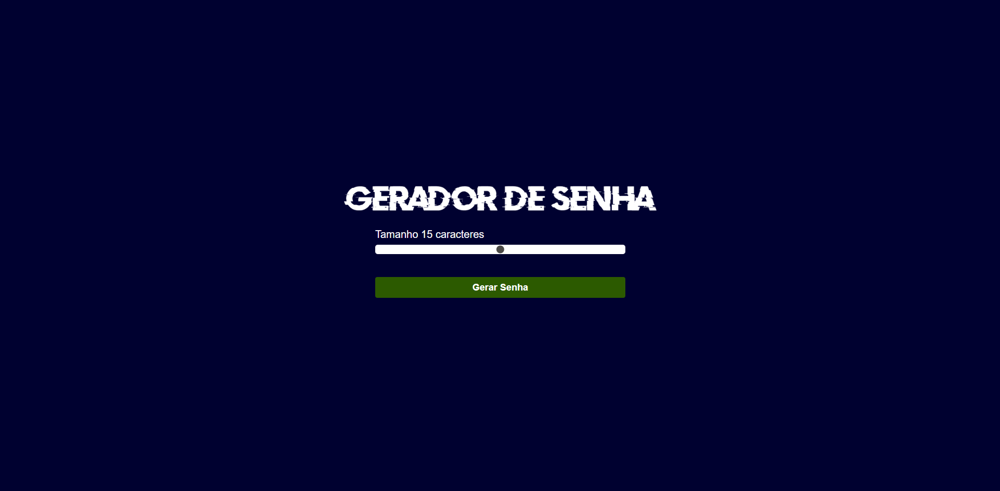
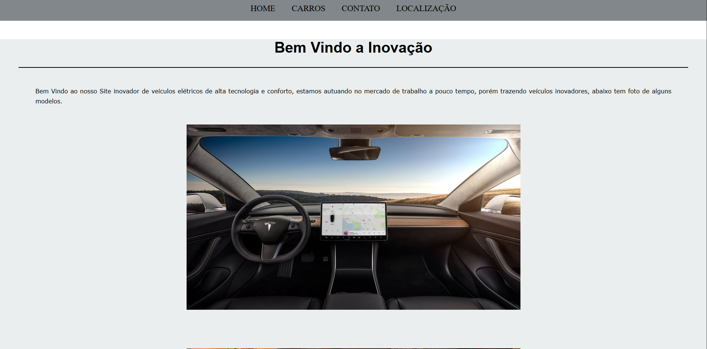
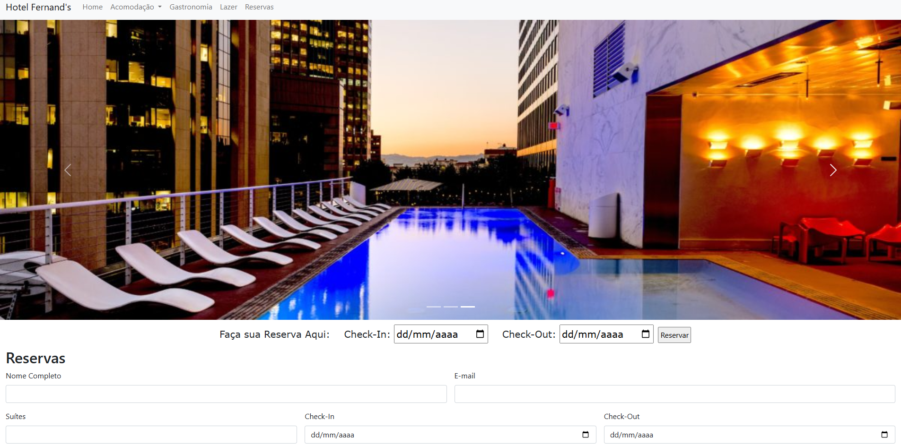
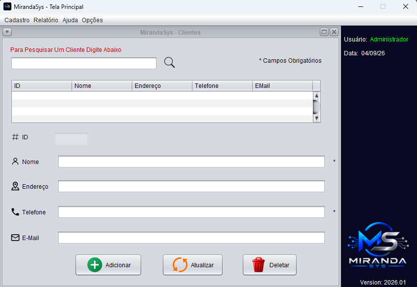

Dev Fernando
Desenvolvedor de Software
Desenvolvedor de Software
Sou desenvolvedor de software em constante evolução, buscando aprimorar meus conhecimentos através de projetos práticos e novos desafios. Gosto de transformar ideias em soluções funcionais, organizadas e bem estruturadas, sempre buscando aprender novas tecnologias e boas práticas de desenvolvimento. Meu objetivo é crescer profissionalmente na área de tecnologia e evoluir cada vez mais como desenvolvedor.
Desenvolvimento de aplicações desktop, lógica de programação e orientação a objetos.
Criação e gerenciamento de bancos de dados e integração com aplicações.
Estruturação de páginas web de forma organizada e semântica.
Estilização de páginas, layouts responsivos e criação de interfaces modernas.

Gerador de Senhas desenvolvido com HTML, CSS e JavaScript, permitindo criar senhas de forma rápida e prática através de uma interface simples e intuitiva.
Ver Repositório
Site de uma loja de carros desenvolvido com HTML e CSS, com foco em uma interface moderna, organizada e na apresentação dos veículos disponíveis.
Ver Repositório
Site de hospedagem desenvolvido com HTML e CSS, com foco na apresentação de hotéis e opções de acomodação através de uma interface simples, organizada e intuitiva.
Ver Repositório
Sistema desktop para gerenciamento de ordens de serviço, desenvolvido em Java com integração ao MySQL e geração de relatórios utilizando JasperReports.
Ver RepositórioTem alguma oportunidade, projeto ou quer trocar uma ideia? Envie uma mensagem pelo WhatsApp.